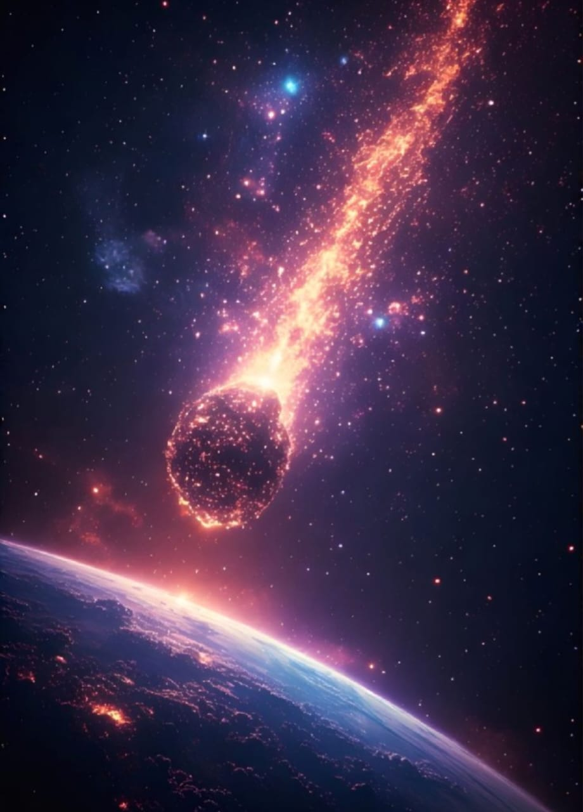

Meteorites are fragments of rock and/or metal that fall from space to Earth. Meteorites break away from large extraterrestrial bodies. They can measure anything from a fraction of a millimetre to the size of a football pitch and bigger.When meteorites are caught by Earth’s gravity, they move towards the planet at accelerated speeds of over 11.2 km per second. As they enter Earth’s thick atmosphere, they rapidly slow down due to the friction and glow, moving across the sky like a flash of light, before finally crashing to the ground. 
Some meteorites are fragments that have broken away during the collision of asteroids. Asteroids are irregular-shaped rocks that orbit the Sun. There are thousands of asteroids in our solar system, mostly located in an orbit between Mars and Jupiter, known as the asteroid belt. A small proportion of meteorites come from the moon and the planet Mars. These meteorites are much younger than those from asteroids, some as young as 2,500 million and 180 million years old, respectively.
Many meteorites floating in space plunge towards Earth’s surface. Most of them fall into the sea. However, thousands of meteorites are found each year. Meteorites can be found all over the world, but are easiest to spot in dry places, such as deserts, where they do not erode quickly and are less likely to be hidden by vegetation.
At 60 tonnes, the Hoba meteorite found in Namibia is the heaviest meteorite known to have been found by humans. It is estimated that it had fallen to Earth as long as 80,000 years ago. Since it is flat, it is said that when it fell to Earth it skidded across the surface, much like a stone skipping across water.